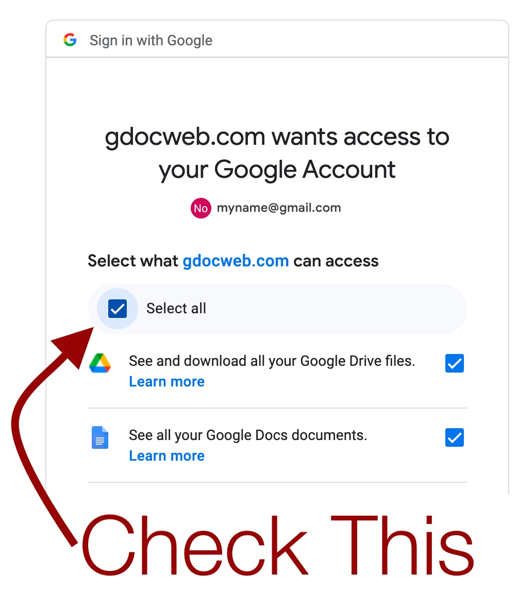
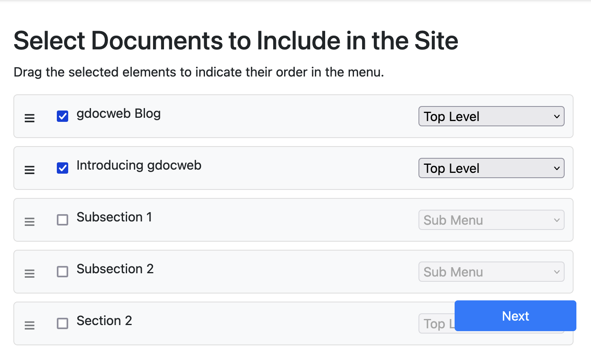
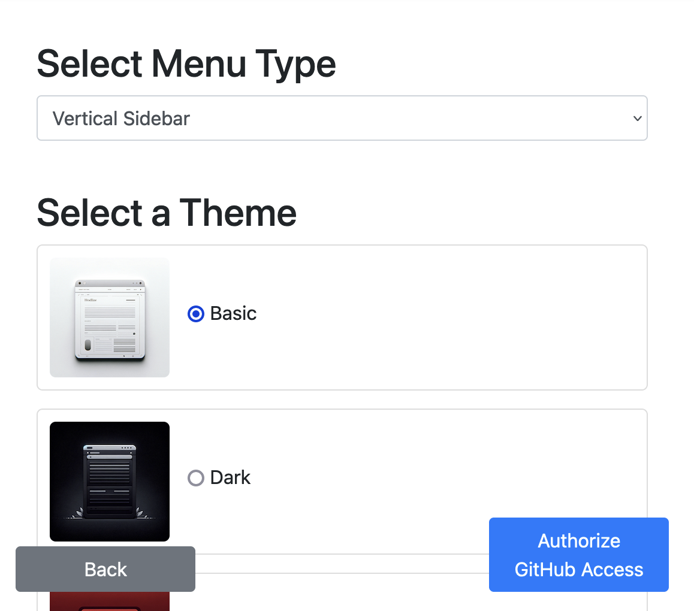
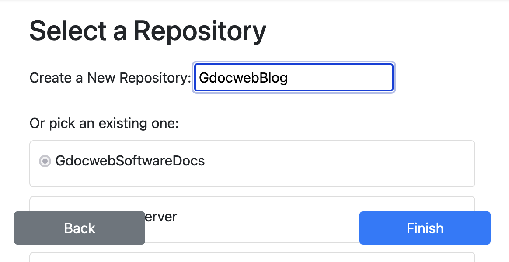
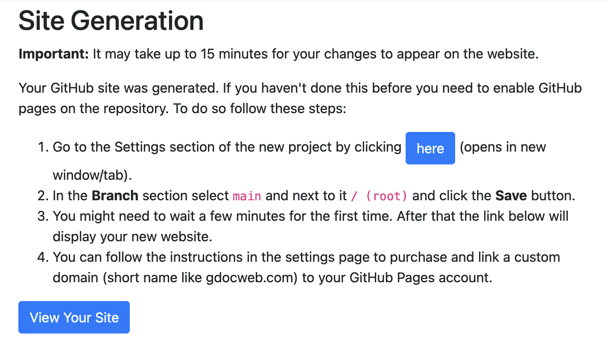
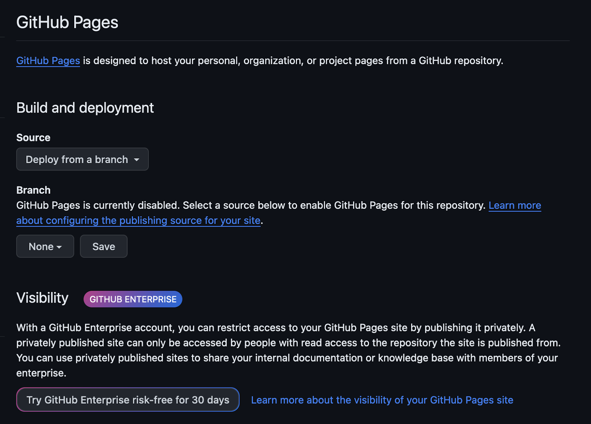
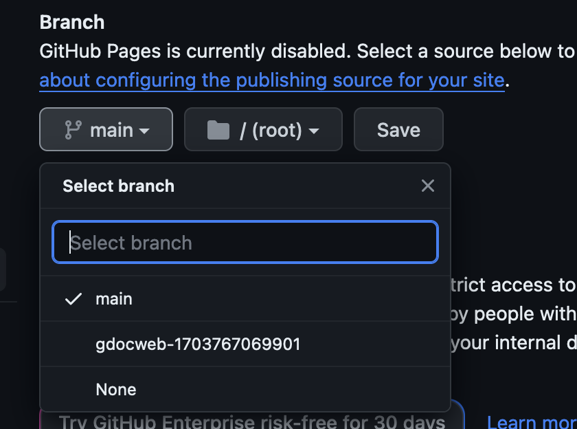
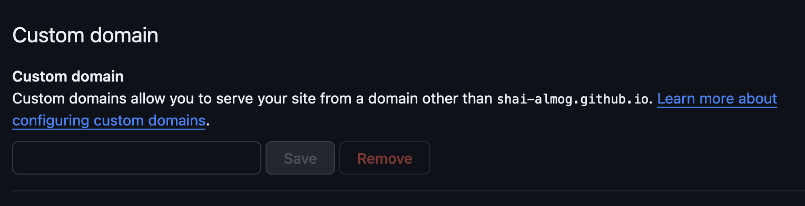
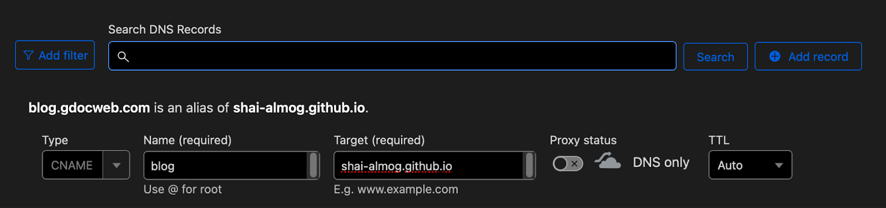
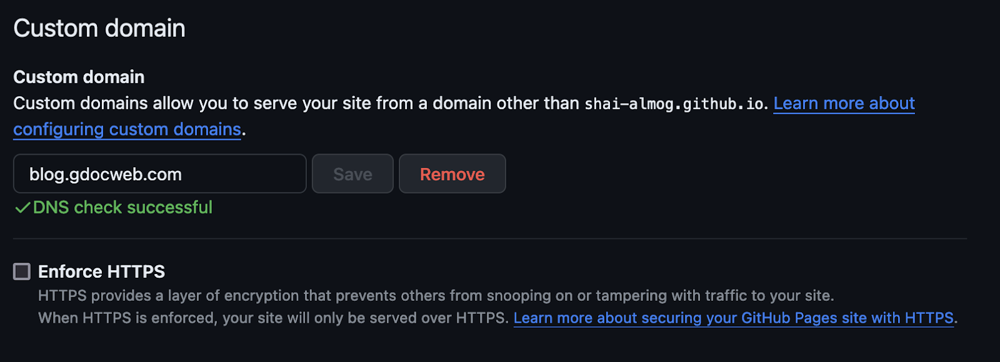

gdocweb Blog
Introducing gdocweb
December 28th, 2023
by Shai Almog

This Post is a Google Docs Document…
Yes. This post started off as a Google Docs document that you can see by clicking that link. I’m assuming you’re seeing it on the web which is where it’s supposed to be. It was translated to a web page seamlessly using gdocweb. Gdocweb converts Google Docs to websites or more importantly to GitHub Pages. GitHub provides free website hosting, including custom domains. That means you end up with a no-strings-attached website.
This is pretty convenient as we don’t have to write HTML or maintain files on GitHub. We can collaborate using Google Docs and get a fully functional site.
How does it Work?
In order to build this blog website we need to first create a few Google Docs documents. You can look for inspiration in the templates section on gdocweb.com. Since this is a blog site I will create two documents. The first is this document that you’re reading right now, it’s the content of the blog. The second document is the homepage of the blog which will include the latest entries and links to the full posts. To link I can create a link to a web page as usual, or to another Google Docs document. Important: link translation will only work for documents that are in the current set of exported documents. If you link to a document that isn’t a part of the site it would remain a link to a Google Docs document. Furthermore, there’s a special case of linking to the current page. Those links aren’t translated since it’s assumed that you might want to provide readers with the ability to edit/review the actual document.
This is also a good time to sign up to GitHub if you don’t have an account yet. It’s the site that lets us host the website for free.
Once we create some documents we need to login on gdocweb.com and most crucially, approve the permissions to access both documents and drive. This is essential to scan the files and is 100% read-only. No data from your documents is retained or saved into disk. See the image below to understand the permission dialog from Google. Also notice that I just dragged this image into Google Docs and it’s now seamlessly a part of this website and blog post…

TIP: When placing images into a document I would suggest checking their file size and trying to keep it below 200kb. Otherwise the performance of your website might suffer.
Once we go through that step we are faced with a list of our documents. You can use your browser's search function to find the relevant entry. Once there we can select the documents we want to include in the site. Notice that your selections are saved and will be shown the next time around.

In this case we need the index page and the first blog post. In the future we will need to add any new blog post we write. You can drag and drop the documents to arrange their order. You can hide them from navigation or make them a submenu. The first entry will always serve as an index.html file, the file that will be shown on the root directory.
Once we made the selection and arranged everything we press next. At this point we are presented with the themes page where we can choose the theme and the menu style. For menu the options are:
- Horizontal - a standard pull down menu bar.
- Vertical Sidebar
In this case I picked the vertical sidebar which will provide us with a list of all the posts as we write more of them. We can also pick the theme. I picked the “Basic” theme, we’re working on additional theme options to provide more choices.

The next step is “Authorize GitHub Access” which is required to save the generated website. This step happens only once, after you approve access to GitHub you will be redirected to a page where you can select the target repository. Since this is the first time I’m running the wizard I typed in a new repository name, after the first time you can pick the same repository and the process will be smoother as you won’t have to follow some of the additional steps.

The Finish button updates or creates the website for you. Once it finishes you will be presented with the final step. If this isn’t the first time you’re creating this website then your site will be up in a couple of minutes. If it is the first time you’re running this process then there are a couple of additional steps.
You can check out the GitHub project for this blog right here.

Only on the First Time
You need to click the “here” button to go to the settings section on GitHub in the newly created repository. Which looks like the following picture.

Under the branch section we need to click the combo box that says “None” and select “main” (or master for older repositories). Then select root on the next combo and click Save as shown in the following image.

Once this is done it will take a couple of minutes to deploy the website to a free URL which you can see by clicking the “View Your Site” button.
Extra Credit - Domain
One of the cool features of GitHub is that it lets you bind a domain (a URL name like gdocweb.com) to a website for free. In this case I want to bind blog.gdocweb.com to the new blog. We can do that with the following steps. We go back to the GitHub settings page we saw previously as shown in the following image:

Notice there’s a link on that page to a tutorial on domain binding. I won’t repeat it here but the gist of it is that you need to add a CNAME entry for the new domain. In this case on cloudflare I used the following to bind the domain. Notice I disabled the proxy functionality as it isn’t needed for GitHub.

Notice that this means you can only have one domain per GitHub account since this isn’t project specific. Once this is saved I can type my new domain in GitHub and save. Notice that this might take a while since HTTPS certificate generation isn’t immediate.

DNS sometimes takes a while to complete, if you’re confident the settings are correct click retry a couple of times.
Future Improvements
gdocweb was designed as a general purpose tool for generating websites. Not as a blogging platform. As such it is lacking in many regards:
- No commenting system.
- We have to generate our own blog index.
- No search or elaborate functionality.
- Themes are still rudimentary.
I would like to improve on all of these when moving forward with this tool. If you feel strongly about any of these let us know on our social channels. This will help us define priorities for the basic issues.

Comments